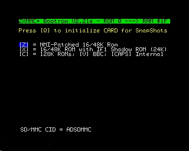
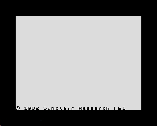
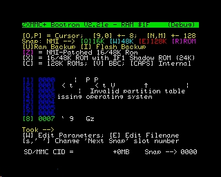
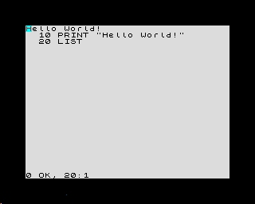
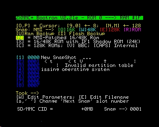
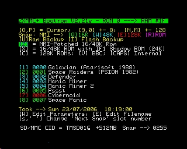
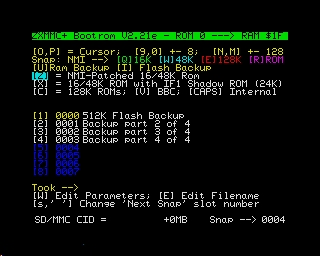
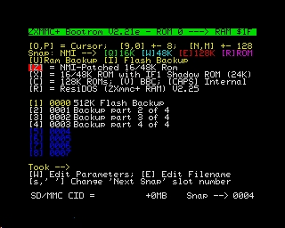

ZXMMC+ (almost) Quick Start
A new interface will
have a blank Flash and Ram chips. In order to program
the bootrom and other needed roms, follow
these steps.
First thing to do is understanding the 4-ways microswitch block
located on the upper right corner of the board.
Switches are numbered
from 1 to 4 and they are "ON" when in upper position (as
clearly marked on the block itself).
SW1: Kempston Enable:
When "ON", the built-in Kempston Joystick interface is
enabled.
SW2: IF1 Enable:
When "ON",
Interface 1 logic (network, serial port) is
enabled.
SW3: RAM/ROM Select:
When "ON", the machine will start from Flash chip; when
"OFF", from RAM (Residos)
SW4: FastPage Disable: When
"ON", the machine will start from internal
ROM, otherwise from Interface's memory (RAM/ROM, based on
SW3).
Switches 3
and 4 allow selecting
the "boot media" from which the computer
will start.
Since the Flash chip is blank, the only option
is booting from
the machine's internal ROM, so SW4 should be
set to "ON" position.
STEP 1: connecting
and checking the interface:
Place all four switches to the "ON" position, then plug the interface on a
working 48/128K ZX-Spectrum.
Switch on the
computer. Since internal ROM is selected
by SW4, the machine should start as always.
Both LEDs on the interface will glow, because the
CPLD has not been initialized by any firmware.
Type the command 'OUT 31, 3'.
This should
turn off both LEDs, confirming that the
interface can receive
commands from the
processor.
(NOTE: this command
is not mandatory; it's just a
checkpoint to make
sure that the interface
is alive).
STEP 2: Programming
the bootrom firmware into BANK 0 in the Flash chip:
You will need the 'Tape EAR' cable with
3.5mm jack to connect the speaker output of your PC to
the Spectrum.
Download the bootrom firmware
from the software page. Along with source code and assembled
binaries, you will find two "tape
playable" files:
UPLOAD.TAP and
UPLOAD.WAV. The content of these two files is the same.
If you don't have a .tap player,
the .wav version will solve the problem.
Type
the command 'LOAD "" CODE'
then manage to "play" the
upload.tap or upload.wav
file on the computer.
When loading completes,
type the command
'RANDOMIZE USR
30100'.
The BORDER
will cycle a few colors
during the
flashing operation:
YELLOW
while a 64KB
block from
flash chip is
backed-up to
RAM (because
the flash chip
can only be
erased on a
64KB size
basis);
CYAN
while the 64KB
ram copy is
being patched
with the new
data;
GREEN
while
comparing
flash content, to
determine if an
erase/flash
cycle is
needed;
If
flash
content is
different from
the uploaded
data, then you
will also see
these two
colors on
border:
MAGENTA
while the 64KB
block is being
erased;
BLUE
while new data
is being written to
the chip.
At
end of
operation, the
bootrom
program will be
started from
the Flash chip
and the
following
screen should
appear:

Note
that the
bottom line will
only appear if
an
sd-card is
detected in
either of the
two slots.
If
you want this
bootloader to
start every
time you turn
on your Spectrum,
move SW4 to
the "OFF"
position.
The
bootrom menu
allow launching
several
different roms. The
only option
that works by
now is
"[CAPS]
Internal"
(rom),
because there
are no rom in
the Flash chip
except the
bootrom in BANK 0
(which is
working now).
If
you press
[CAPS LOCK] the
internal rom
will be
started and
the machine
will behave as
always,
except for the
availability
of the
additional peripherals
provided
by the
interface (for
example, the
Kempston
Joystick).
STEP 3: Programming
remaining ROMs into the Flash chip:
To drive the new hardware, a few standard
rom have been patched and
made available. The
most important change is an NMI handler (for snapshots).
These roms should be programmed into the Flash
chip. There is room for 32 roms
(16K each) and by now we just programmed
BANK 0 with the bootrom.
To do
so, you need a
zxmmc+
serial cable, a
PC with serial
port
and the
Win32
ZX-Com
program.
NOTE:
Alternatively,
take a look
at "STEP 3bis"
which uses
a properly
prepared
sd-card
instead, in
case you
don't have the
serial cable.
Go to the
'Bootrom'
section in the software
page. There you will find the
description of the standard layout to be
programmed into the flash chip.
As you can see, banks 2 and 3
should receive a 16/48K Spectrum rom
modified for NMI handling. This
will allow using the NMI
button to save snapshots
to the sd-card. In the
same way, banks 6 and 7 are intended
for a patched version of the 128K
Spectrum roms.
All these roms will
then be available from the bootrom
main menu, shown above. Pressing the
'Z' key will start the NMI-patched
rom programmed in bank 2.
If you try now, the
machine will hang because the rom
is blank.
Download
the program
(no need to
install) and
start it.
Connect the
serial cable
between the
zxmmc+ and the
PC.
Start
the ZX-Com
program.
Under
the 'Options'
--> 'Serial
Port' menu,
select the
proper serial
port (where
you connected
the cable);
Under
the 'Options'
-->
'Hardware'
menu, select the
'ZX-mmc+'
interface.
Download the
zipfile with
all the
patched rom from
the link at
the bottom of
bank
description,
in the
software page.
Go to
the
'Flash' -->
'Flash Rom'
menu,
then navigate
to the folder
where you
unzipped the
rom pack and
select the
file 'B23.bin'
(which
includes banks
2 and 3);
click
on the spin and
select bank n.
2 as destination
in the flash
chip;
Wait
for the
transfer to complete;
A message will
appear to
confirm
that you are
about to FLASH
new data into
the flash chip
(the selected
bank(s) will
be displayed);
Press
'Y' to
confirm;
The
bootrom will
then compare
flash content
and, if
necessary,
erase it
and program
with the new
data.
If eveything
goes right,
you will see
the message "ROM
Successfully
Flashed.
Please RESET
or send
another ROM".
At
this
point, repeat
the steps
('Flash -->
'Flash Rom')
then select
the file
named
B4567.bin,
which contains
data for banks
4, 5, 6, 7.
click
on the spin in
order to
select bank n.
4 as
destination in
the flash chip
and go
ahead.
Repeat
again for file
B89A.bin,
to be
programmed starting
from bank 8.
When
you're done,
reset the
Spectrum and
try any of the
new rom you
installed. For
example,
pressing 'V'
will start BBC
Basic.
All
these rom
provide an
NMI handler,
which means
that you can
freeze the
machine state
into snapshots
on sd-card or
using the
ZX-Com
program.
For
example, start
the
NMI-patched
48K rom (by
pressing the
'Z' key at the
bootrom menu).
Go
to the ZX-Com
program
on the PC and
press the 'Log
IN' button (if
you come from
previous flash
programming,
you need to
cycle 'Log
OUT' and then
'Log IN'). The
border will
turn yellow.
Now,
you can
transfer any
memory region
from/to the
spectrum
and also take
snapshot that
will be saved
into files on
the PC.
For
example,
press the
'Screen'
button (this
will preset
the address
editboxes
properly) then
press the 'RX
Block'
button.
After a few
seconds, you
will get the
following
screen:

STEP 3bis: Using
an sd-card to program remaining ROMs into the Flash chip,
instead of serial cable:
If you're in
trouble with the serial cable or the Win32 ZX-Com
program, there is another way to program the patched
roms into the Flash chip.
This alternate method takes advantage of the Flash Chip
Backup/Restore utility, available in the bootrom
firmware.
This Flash chip Backup RAW Image has been
created from a
card containing a Flash chip
backup, made
using the 'I' option
of the bootrom firmware.
Recreating an
identical sd-card and restoring
this backup to your interface, will
program all Flash banks at once.
Since
the FAT takes
512KB and
the actual
backup data of
the Flash chip
takes 512KB
more, this
file contains 1MB
of raw
data that
should be
written at the
physical
beginning of
the sd-card, using
a PC and a
card reader/writer.
Just
for reference,
the
command used
to create the
image was:
dd if=/dev/sdb
of=flashrom_backup_bl2.21e.raw
count=1024
bs=1024
After
downloading
the image
file, write it
to the card
using a raw
writing
program. Under
Linux,
assuming that
the sd-card is
seen as
/dev/sdb, use
the following
command:
dd
if=flashrom_backup_bl2.21e.raw
of=/dev/sdb
Remove the
card from the
PC and put it
in
one of the two
slots
available on
the ZXmmc+.
Switch
on the
Spectrum. The
menu' should show
a "512K Flash
Backup"
in the first
slot of the
newly prepared
sd-card, like
in the
screenshot
shown at the
end of STEP
4.
Press
the '1' key
(or select
this snapshot
using 'O' and
'P' keys then
press 'ENTER') to
start
restoring the
backup
to the Flash
chip.
When
the process
completes,
reset the
Spectrum and
test your new
roms.
STEP 4: Preparing an
sd-card for use with snapshots (raw filesystem):
In order to take
and restore screenshots to an sd-card,
the sd-card should be initialized by
the bootrom.
To do so, insert the card (preferably small sized, i.e. less than 4GB),
start the machine then press 'Q'.
You will be asked an offset (in
256MB increments) from which using
the memory space. This
allows "partitioning" the sd-card with a
standard filesysyem (at the beginning of the
card) then using the reminder of the space as RAW area.
NOTE: the
number of available offsets
depends on the size of the
sd-card.
The
inizialization
process does NOT erase the
raw data that may be present on the
card. This means that
after being prepared by
using the 'Q' command, the screen
layout may look like
this:

From this
picture, you can see the content
of the first 8
snapshot slots and that
they all contain
garbage. The
bottom row shows
"Snap --->
0000" which
means that the
next snapshot
will be saved
into slot number
0000. You can
change this
saving
position by
keys 'SPACE'
(increase) and
'SYMBOL
SHIFT'
(decrease).
To
test the snapshot
capability,
jump into one
of the patched
roms (for example
press the 'Z'
key to run a
16/48K
spectrum) then
type
in any
simple basic
program.
Then,
press the NMI
hardware
button (placed
on top of the
interface).
The border
will turn
BLUE. Now
press the
'W' key, to
save a 48K RAM
snapshot.
The
led on the sd-card
slot will glow
and,
after a few
seconds (depending
on the card
speed) a
flashing
square will
appear on
the upper left
corner of the
screen.
The
snapshot has
been saved! The
computer will
keep
working as
nothing
happened.
The
screen will
look like
this:

Note the
coloured
square box in
the upper left
corner,
which means
that a
snapshot has
been taken
(this is not
saved to the snapshot).
The
next time you
reset your
computer,
the bootrom
menu' will be
like this:

As
you can
see, the first
slot is now
occupied by
your first
snapshot and
the name ("New
SnapShot ...")
no
longer
contains
garbage. You
can edit the
name of
the snapshot
by selecting it's
row (keys 'O',
'P') then
pressing the 'E'
key. You can
also edit
snapshot's
parameters by
pressing the
'W' key. Note
that the
frequency
selection only
applies to
a
ZX-Badaloc
FPGA hardware.
If you
now press key
'1' or select
the snapshot's
row
then press
ENTER, the
exact machine
state frozen
when you
pressed the
NMI button
will be
restored and
program
execution
resumed from
there.
Finally,
this is how
the bootrom
should look when
started with
an sd-card
that contains
data on all of
the first 8
slots:

The
color of the
line indicated
the size of
the snapshot.
GREEN
for 16K, CYAN
for 48K and
RED for 128K.
Dark blue is
for unknown
format.
Every
slot always
occupies a fixed
size of 128KB
on the sd-card.
The meaning of
having smaller
sized snapshot
is saving
read/write
time.
There are
other snapshot
types, please
look at the
bootrom source
code for these
information.
For
example, by
pressing key
'I' in the
bootrom, you
can save the
entire 512KB
Flash chip
content into the
sd-card (4
slot are used,
since they are
128KB each).
Such
a snapshot woud
look like
this:

To restore the
backup to the
Flash chip,
simply select
and launch it
(or press the
corresponding
key, which
is '1' in the
example).
This
function would
allow to setup
a new board
and program
all ROM banks at
once, without
the need of
the serial
cable and
ZX-Com program
(see STEP
3bis).
STEP 5:
Installing ResiDos in the interface's RAM chip:
ResiDos is an operating system
written by Garry Lancaster, who made a specific
version for the ZXmmc+, that works entirely into the
battery-backed 512KB RAM memory of the ZXmmc+
interface. Once installed, the bootrom recognizes it and offers an
additional option ('R') to start
it, as shown in this screenshot:

Alternatively, you can set SW3
to the "OFF" position (Ram/Rom
boot selector) and have the
ResiDos starting immediately at power-on.
The ResiDos Homepage provides
installers in
both .tap and
.tzx
format.
You can load these files from
"tape" and install
ResiDos
into the
interface's RAM.
Furthermore,
in the software
page
you will find
a link to the
latest tested
version, which
includes a
ZX-Com serial
snapshot
of the
installer:
this way, if
you have a
serial cable,
you can upload
the snapshot
to the board
without having
to deal with
EAR cable and
.tap/.tzx
players.
Also, if you
managed to use
the Flash chip
RAW image
described in STEP
3bis, then you
will
find the latest
tested
installer
ready for use
in the special
Flash-based
snapshot slot.
Just press the
'T' key while
in the bootrom
menu to start
the ResiDos
installer.